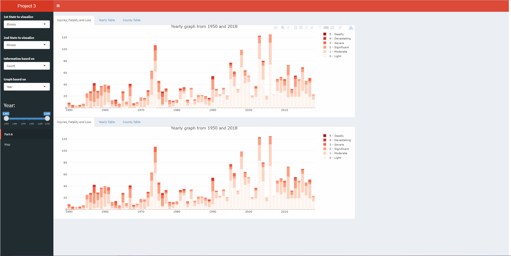
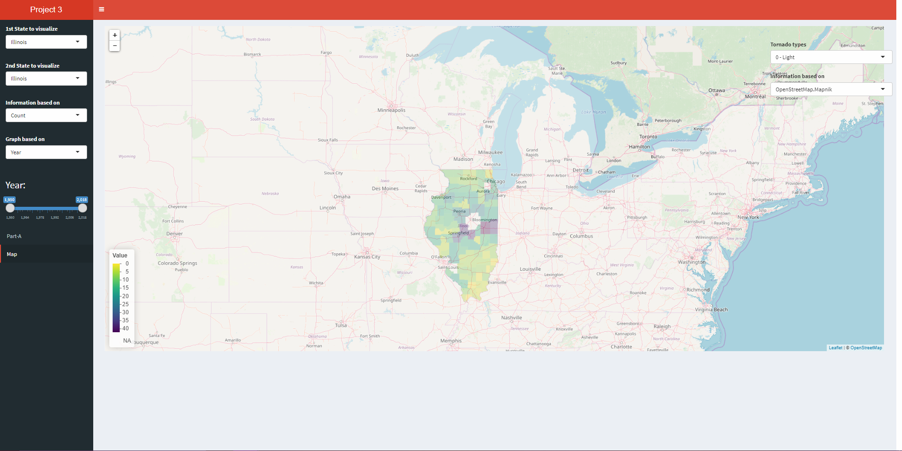

Home
You Spin Me Round
By
Vikas Kumar
Getting Started
Link to the Project
Source code
In order to run this project kindly install the latest version of R studio. Install all the necessary libraries used in the source code (located at the top of the source code) using install.packages(“library-name”). Also make sure to set the directory of R to where the source code is located in your computer.


References
1. Reference code provided by Prof Andy Johnson
2. Shiny Tutorials
3. Project 2